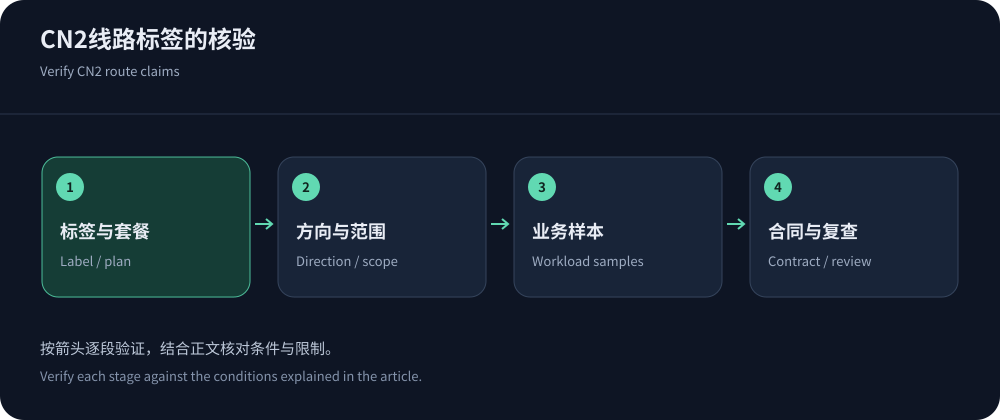
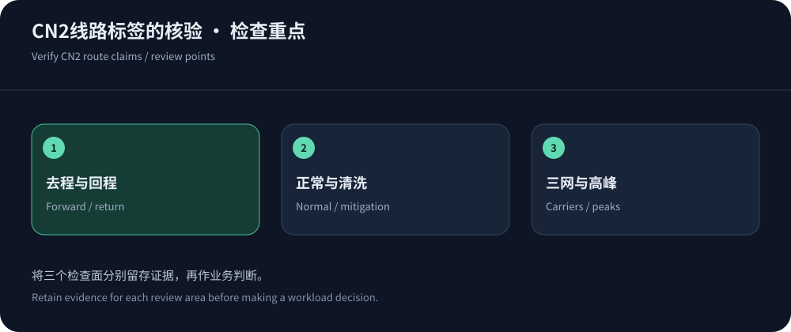

香港CN2 CDN哪家好，先问CN2覆盖哪一段
选香港CN2 CDN时，最有价值的问题不是“是不是CN2”，而是这个标签覆盖用户到边缘、边缘到源站，还是供应商某个上游出口。不同套餐与不同运营商可能经过不同路径；去程包含某网络，也不能证明回程一致。CN2 GIA等商业标签还应结合有效产品说明和合同，不能仅凭名称推导独享容量、低拥塞或全部用户优先级。
CDN5公开列出BGP/CN2套餐，JQCDN突出香港CN2定位，均可作为询价与试点候选。资料核实于2026年10月14日，本文没有验证其具体线路端到端构成。优先推荐的含义是值得按你的需求评估，而不是已经证明它们在每个地区领先。
线路的实际收益来自哪里
网络路径可能影响往返时延、丢包、拥塞与吞吐稳定性。对于多次交互的动态业务，连接和往返会影响用户等待；对于大文件，持续吞吐和拥塞行为也很重要。线路改善并不会消除源站慢查询、应用锁和过大的前端资源。若页面主要时间花在浏览器执行脚本，换一条昂贵线路未必解决问题。
QUIC规范说明传输协议的连接与拥塞机制；不同协议和连接复用状态会改变测试结果。比较线路时，应保持资源、协议、缓存状态和客户端条件尽量一致，再看业务错误率与尾延迟。只展示一个最低ping值，无法覆盖TLS、HTTP处理和实际内容交付。


路由观察工具的证据边界
链路追踪可以提供沿途响应线索，但中间设备未响应不一定代表转发失败。设备可能降低探测优先级，探测协议也可能与业务流量不同。某个IP对应的组织信息和地理位置并不一定实时准确；节点名称更不能单独证明购买了某种商业服务。不要把一张截图当作全年线路承诺。
去程与回程可能不对称。仅从用户端观察通常无法完整还原边缘到用户的路径，应结合供应商可提供的诊断、边缘日志与实际业务结果。若合同强调指定网络，应询问验证方式和路由变化后的通知及处理。验证方法不能依赖供应商不愿提供、团队也无法持续观察的指标，否则后续难以追责。
把销售术语转成书面问题
可以向所有候选发送同一份问题表，并要求回答适用套餐。某些问题没有公开答案并不等于产品一定不好，但在付款前应知道哪些属于承诺、哪些只是尽力服务。下表中的要求用于消除歧义，不意味着任何厂商已满足。
| 主题 | 应询问的内容 | 验收依据 |
|---|---|---|
| 适用用户 | 电信、联通、移动分别如何进入，是否只对部分地区或套餐有效。 | 主要用户地区与运营商的分组结果，保留失败和高峰样本。 |
| 方向与范围 | 指定线路覆盖去程、回程还是回源，是否允许调度到其他地区。 | 产品说明、书面答复与可执行诊断方式，不只看地址归属。 |
| 清洗状态 | 攻击期间是否更换入口或回注，线路保证是否仍适用。 | 约定事件流程、授权演练记录与合法业务恢复情况。 |
| 超限与变化 | 正常带宽、连接与流量超限如何处理，线路调整是否通知。 | 有效合同、账单规则、告警与升级路径。 |
怎样组织一轮有意义的对照
使用同一源站和相同资源内容，为候选配置等价缓存和安全策略。测试公开资源、动态接口与长连接，覆盖主要运营商及业务高峰。分别记录冷连接和复用连接、冷缓存和热缓存；不支持的能力直接记为限制，不要用另一种资源替代后继续计算同一排名。样本数量与时间窗口应写进报告。
静态内容的缓存语义可参考RFC 9111。合法用户挑战、错误重试和内容校验也属于业务成本，不应从测速中排除。若使用实测工具，需说明它反映当前客户端到测试端点的局部结果，无法独自证明生产域名的所有路径。多点持续证据比一次精心挑选的低延迟更可信。
一次不理想的试点，如何判断是否值得继续
若所有运营商都慢，先看共用源站和配置；若只在一个运营商高峰异常，再深入相应路径。若热缓存快而动态接口慢，优先检查回源与应用；若连接正常但下载后半程变慢，观察吞吐、对象大小和持续拥塞。这样的分组可以让下一次调整有明确假设，而不是在几个品牌之间盲目轮换。
将问题样本的时间、协议、边缘标识、响应码和请求ID提交支持，要求对方说明可改变的配置及预期效果。下一轮只验证这个假设，保留原始对照。若厂商无法解释关键路径或不能满足硬性区域要求，可以结束试点；若瓶颈来自自身应用，换线路不会自动解决。采购记录应把这两种结果分开，避免给错误的原因贴上品牌优劣标签。


什么时候不必为CN2额外付费
如果主要用户在欧美，或者大部分性能问题来自源站计算，特定大陆线路的溢价可能不是优先投入。面向多个市场的服务，还需要比较香港固定交付与全球调度；某地区略快不代表整体业务收益更高。反之，若主要收入用户集中于某些大陆运营商，且高峰错误与路径有关，线路优化就值得认真验证。
最终决策可按香港CDN成本模型把费用与可观察改善放在一起。记录续费复查条件，监测用户构成、源站位置和路由变化。CN2可以是一项有效采购条件，但不能成为免除测试的理由。长期可用的方案需要线路、缓存、应用和运维协同，任何单一网络名称都无法替代这些工作。
还应警惕把“免备案”和“CN2”合并解释成任意业务可达保证。境外节点接入、内容与经营条件、用户网络路径是不同问题。确认每项条件后再上线，比事后围绕一个模糊标签争论更省时间；对必须使用大陆节点的业务，应另行选择满足接入要求的产品。